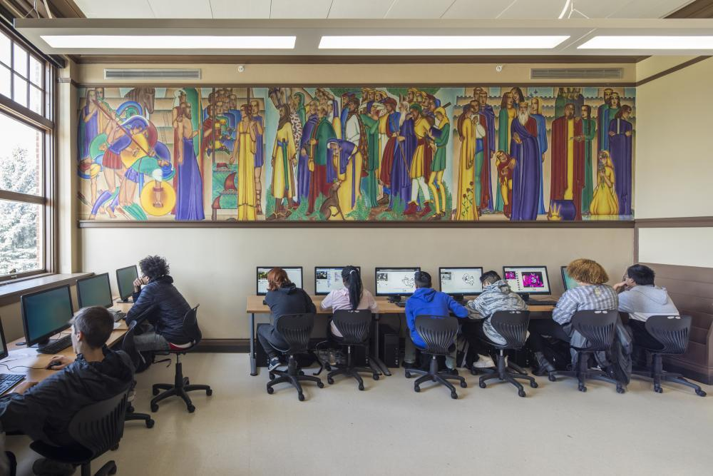

← Return to Volunteer Page

Time Commitment of approximately 8 hours/month.
Participation will either be in-person or over email, depending upon the needs
of resource leaders.
We are seeking 1 volunteer for this role.
Volunteer should have an interest in communication and organization, but no
specific experience in required.
One part of our mission is to support the current students of Roosevelt. We are looking to streamline our communication with the resources available
to student in need and develop personal relationships between our organization and the school's resource leaders. This will allow us to provide the
best support possible and be constant advocates for Roosevelt students.
Duties & Responsibilities
- Create a master list of school resource contacts and establish connections.
- Within the first 6 months of appointment, the Liaison should be known to every relevant resource as the point of contact for the RHSAA.
- Connect with each resource at least monthly to collect needs of their organization.
- Connections can be made in person or virtual/email depending upon their needs.
- Attend Executive Committee meetings to coordinate needs to and from the school resources.
- Executive Committee meetings happen every other month and the Liaison should attend 4 of the 6 per year at a minimum.
- Coordinate with the Communications Committee to express needs to a wider alumni base.
- The Communications Committee will release all communication needed to the alumni base and report back all responses.
- Convey any available resources and connect potential volunteers from the RHSAA to school resources.
- Liaison will maintain "two-way" communication and convey ways the RHSAA can assist these resources in achieving their goals.
Interested in volunteering? Send an email to our Association President at president@rooseveltalumni.org
with the subject line "School Resources Liaison" to learn more.
We can't wait to have you join us!